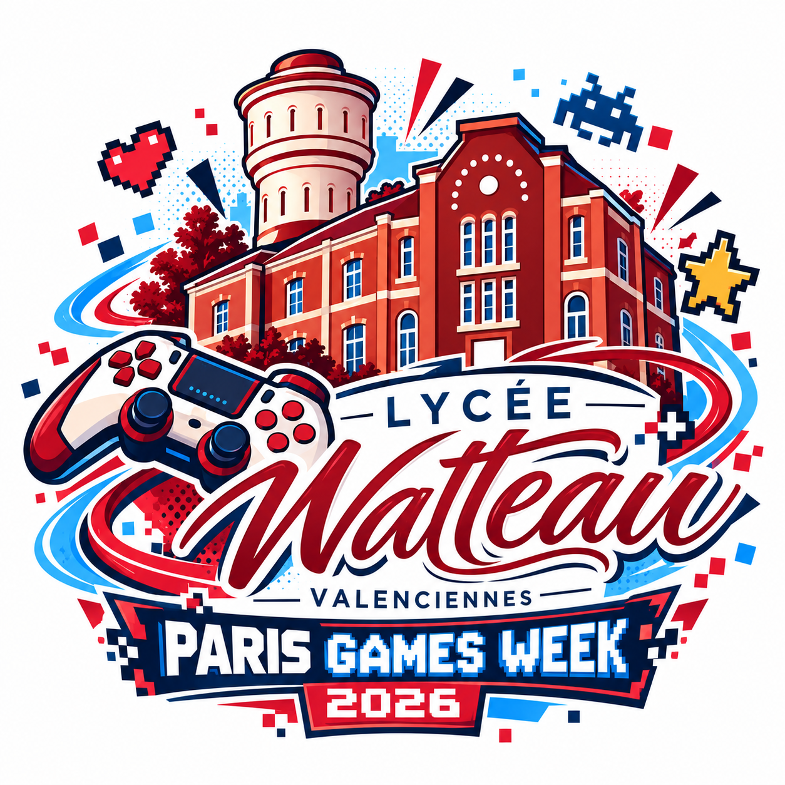
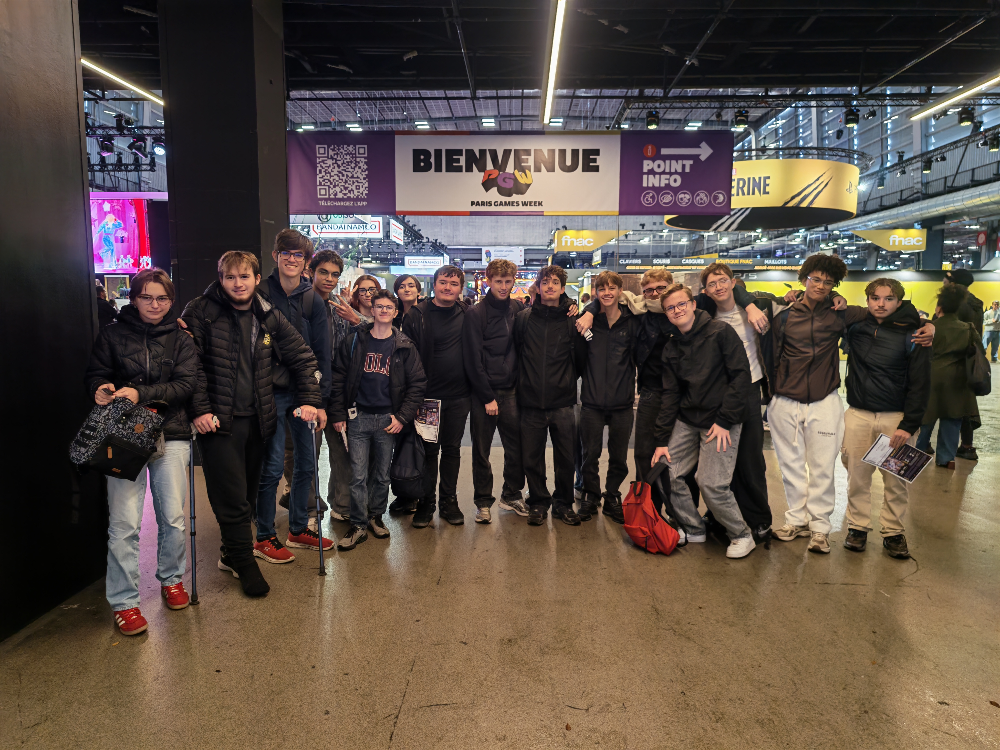
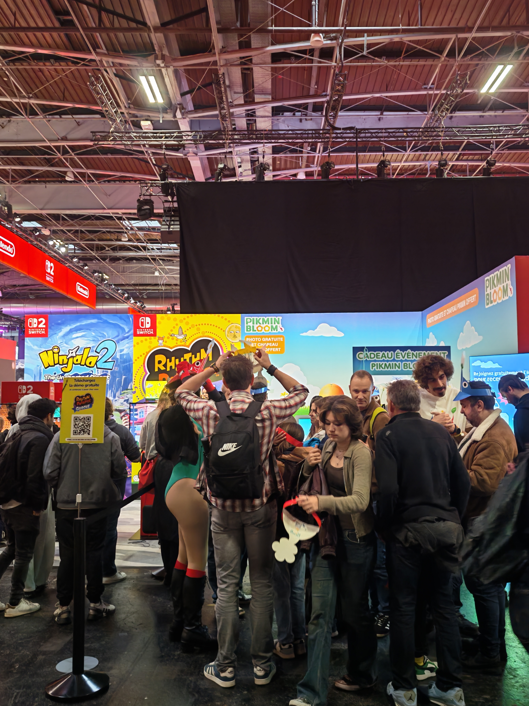
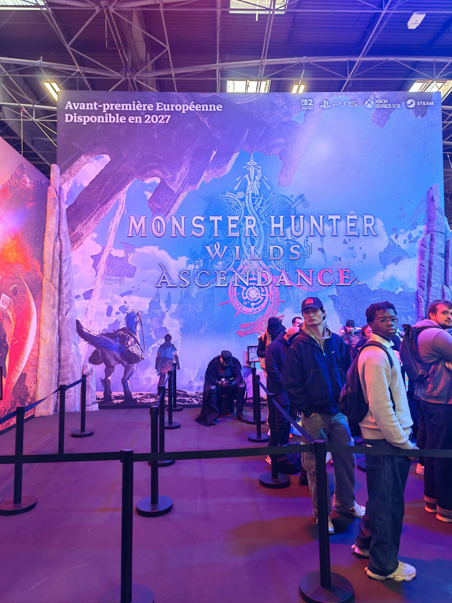
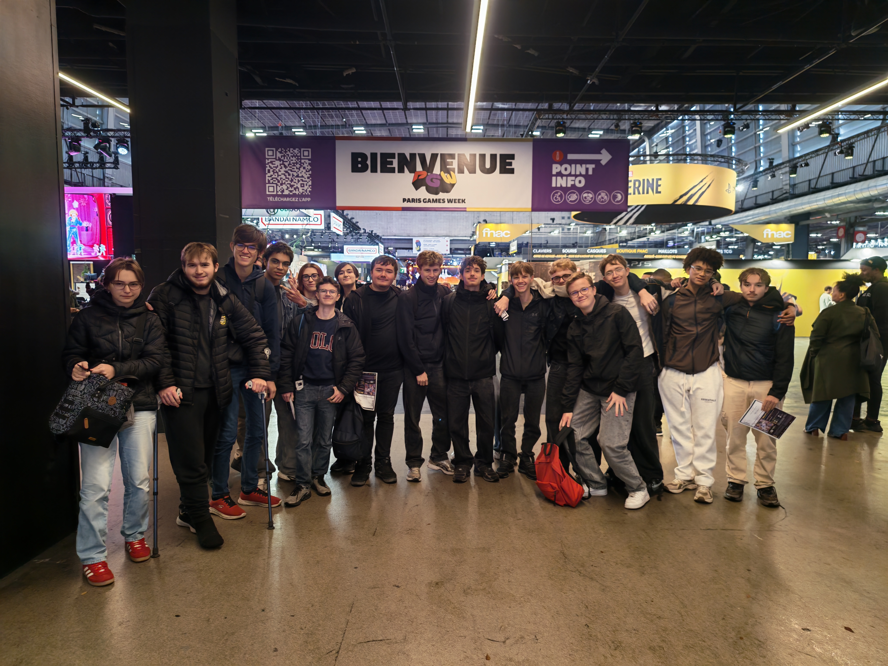
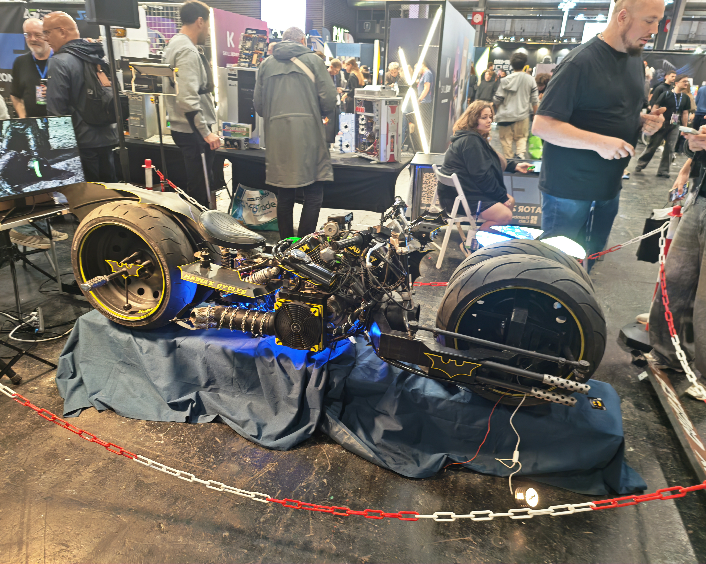
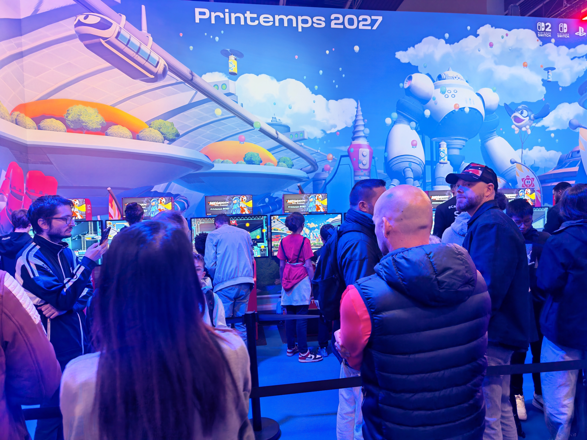

01 / THE ARRIVAL
Le 23 octobre 2026, les élèves de Terminale NSI du lycée Watteau découvrent la Paris Games Week. Une journée pour observer, partager et découvrir le jeu vidéo autrement.

LYCÉE WATTEAUVALENCIENNESAPPRENDRE · EXPLORER · PARTAGERPLUS QU'UNE SORTIE...UNE AVENTURE !


Découverte du salon et de son univers
Jeux, stands et moments marquants
Notre équipe et nos souvenirs
Les meilleurs moments en mouvement
Prolongement pédagogique de la sortieLe 23 octobre 2026, les élèves de Terminale NSI du lycée Watteau découvrent la Paris Games Week. Une journée pour observer, partager et découvrir le jeu vidéo autrement.
Une première sélection de souvenirs. Le tri éditorial définitif des photographies reste à réaliser.
Au centre de l'aventure : les élèves et leur photographie de groupe, conservée sans transformation.
Premiers extraits de la sortie. Les vidéos se chargent uniquement à la demande.
Les missions pédagogiques prolongent la visite en reliant le jeu vidéo aux notions de la spécialité NSI.
Le lien exact de l'application des missions reste à confirmer : aucun lien fictif n'est proposé.